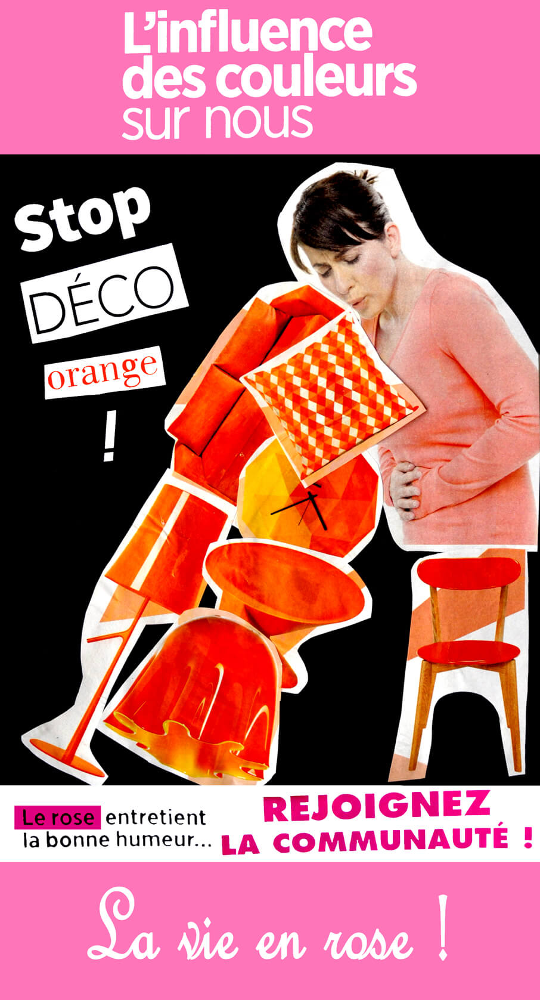

← all projects
Photo collage
This is a photo collage that has been created for a college’s module. I had to create a poster while sticking to the theme of the absurd. The poster suggests that you should use pink ornaments because they convey good mood.
- 2017
- Photo, Collage
- Photoshop

The collage was made with many pieces of different magazines. Then, it was edited on Photoshop for a better rendering.
Have a similar project in mind? Get in touch